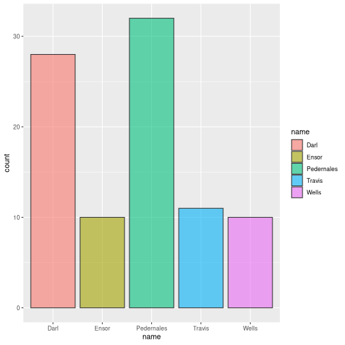
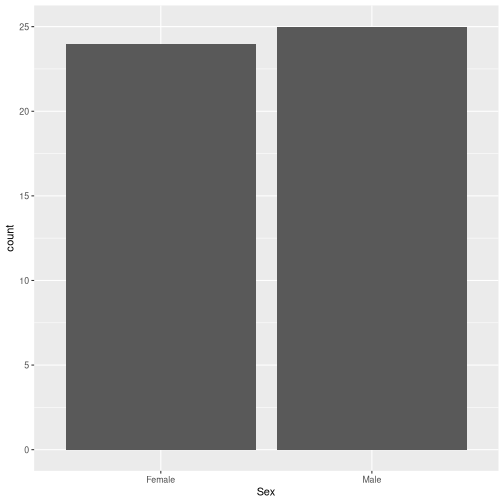
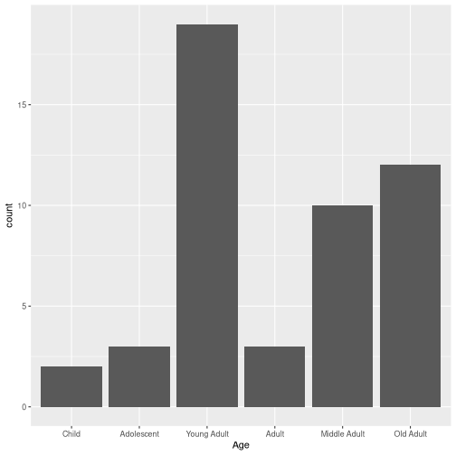
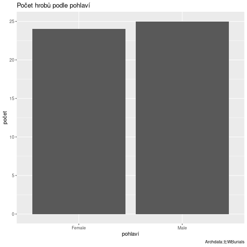
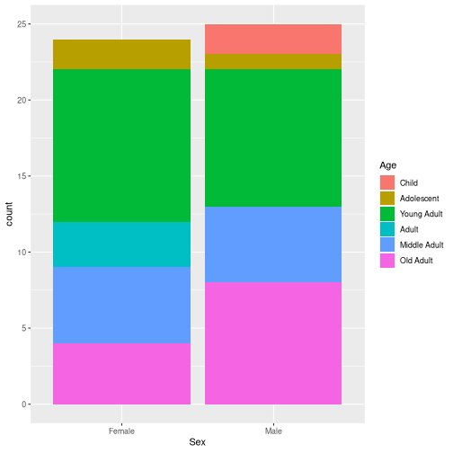
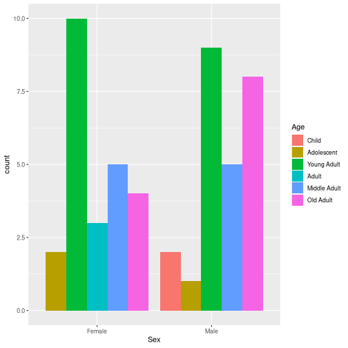

stat4arch
author: Petr Pajdla & Peter Tkáč autosize: true width: 1920 height: 1080
AES_707: Statistics seminar for archaeologists
Seminar 3
type: section
17. 3. 2022
Today:
- Data visualization, plots for one variable.
- Descriptive stats.
- Data manipulation basics (base R and dplyr package).
- Plotting in ggplot2.
Descriptive statistics
type: section
Characterizing centrality
incremental: false
Mean
mean(x)
\(\begin{aligned} \overline{x} = \frac{x_1 + x_2 + \cdots + x_n}{n} = \frac{1}{n} (\sum^n_{i=1}x_i) \end{aligned}\)
Median
median(x)
Robust, minimizes influence of outliers.

Characterizing dispersion and/or spread
incremental: false
Range
(rozpětí)
max(x) - min(x) or range(x)
Variance and Standard deviation
(rozptyl a směrodatná odchylka)
sd(x)
\(\begin{aligned} \sigma = \sqrt{s^2} = \sqrt{\frac{\sum(x_i-\overline{x})^2}{n-1}} \end{aligned}\)
Interquartile range
(midspread, IQR, kvantil, mezikvartilové rozpětí)
IQR(x)
Robust, minimizes influence of outliers.
Fuu
title: false
<img src=“./fig/normal_distribution.png”, style=‘width:80%;’>
Why look at data then?
Anscombe’s quartet
# A tibble: 4 × 6
set `mean(x)` `sd(x)` `mean(y)` `sd(y)` `cor(x, y)`
<int> <dbl> <dbl> <dbl> <dbl> <dbl>
1 1 9 3.32 7.50 2.03 0.816
2 2 9 3.32 7.50 2.03 0.816
3 3 9 3.32 7.5 2.03 0.816
4 4 9 3.32 7.50 2.03 0.817Four sets of numerical data, all have almost identical values of descriptive statistics…
Why look at data then?

Visualizing data
type: section
Brainstorming
type: prompt incremental: true
- Prečo potrebujeme vizualizovať data?
- Aké vlastnosti má mať dobrý graf?
- Aké prvky vieme na grafe pomenovať?
<img src=“./fig/boxplot_carlson.png”, style=‘width:60%;’>
Data viz
<img src=“./fig/minard.png”, style=‘width:80%;’>
(Minard 1869)
Data viz
<img src=“./fig/snow.jpg”, style=‘width:40%;’>
(Snow 1854)
Types of graphs
type: section
Bar chart
(Sloupcový graf)
Distribution of values of a qualitative variable.

Histogram
Distribution of values of a quantitative variable.

Density plot
Similar to histogram, great for comparison.

Boxplot
(Krabicový graf)
Comparison of two and more quantitative variables.

Boxplot

Plotting in R
type: section
-
Base graphics with
plot -
Package
ggplot2
Base graphics
incremental: false right: 60%
Cvičenie s tabulkou lokality.
lokalita objekty_ks
1 Vedrovice 27
2 Kyjovice 13
3 Pohansko 55
4 Mikulčice 29
5 Znojmo 20barplot(lokality$objekty_ks,
names.arg = lokality$lokalita,
col = "lightblue")
Package ggplot2
incremental: false
install.packages("ggplot2")library(ggplot2)Syntax
<img src=“./fig/ggplot_syntax.png”, style=‘width:100%;’>
ggplot2: syntax
title: false
ggplot(data = lokality, aes(x = lokalita, y = objekty_ks)) +
geom_bar(stat = "identity")
ggplot2: syntax
title: false
Dlhý zápis:
ggplot(data = lokality, mapping = aes(x = lokalita, y = objekty_ks)) +
geom_bar(stat = "identity")Krátky zápis:
ggplot(lokality, aes(lokalita, objekty_ks)) +
geom_bar(stat = "identity")
Barplot
incremental: true
Cvičenie s databázou EWBurials.
library(archdata) # ?EWBurials
data(EWBurials)
hroby <- data.frame(EWBurials)
head(hroby, 4) Group North West Age Sex Direction Looking Goods
011 2 96.96 90.32 Young Adult Male 42 283 Present
014 2 100.20 90.61 Young Adult Male 28 272 Present
015 2 101.74 91.62 Old Adult Male 350 219 Present
016a 2 101.00 90.47 Young Adult Male 335 60 AbsentOtázky
- aký je pomer mužských a ženských hrobov?
- aké je zastúpenie vekových kategórií medzi pohlaviami?
- líšila sa prítommosť milodarov (1) v závislosti na pohlaví alebo (2) v závislosti na veku?
- aké sú rozdiely medzi skupinami?
1. Aký je pomer mužských a ženských hrobov?
incremental: true
p <- ggplot(hroby, aes(x = Sex))p + geom_bar()
Ako by ste spravili podobný graf, zobrazujúci rozdelenie hrobov podľa veku?
p <- ggplot(hroby, aes(x = Age))p + geom_bar()
Labels
incremental: true
p <- ggplot(hroby, aes(x = Sex)) +
geom_bar()p + labs(x = "pohlaví",
y = "počet",
title = "Počet hrobů podle pohlaví",
caption = "Archdata::EWBurials")
2. Aké je zastúpenie vekových kategórií medzi pohlaviami?
incremental: false
Stacked bar chart: geom_bar().
p <- ggplot(hroby, aes(x = Sex, fill = Age))p + geom_bar()
2. Aké je zastúpenie vekových kategórií medzi pohlaviami?
Dodged bar chart: geom_bar(position = "dodge").
p <- ggplot(hroby, aes(x = Sex, fill = Age))p + geom_bar(position = "dodge")
3a. Líšila sa prítommosť milodarov v závislosti na pohlaví?
p <- ggplot(hroby, aes(x = Sex, fill = Goods))p + geom_bar()
3b. Líšila sa prítommosť milodarov v závislosti na veku?
incremental: true
Absolútne čísla
p <- ggplot(hroby, aes(x = Age, fill = Goods))p + geom_bar()
3b. Líšila sa prítommosť milodarov v závislosti na veku?
incremental: true
Relatívny pomer
geom_bar(position = "fill")
p <- ggplot(hroby, aes(x = Age, fill = Goods))p + geom_bar(position = "fill")
4. Aké sú rozdiely medzi skupinami?
incremental: true
p <- ggplot(hroby, aes(x = Age))p + geom_bar() +
facet_grid(Sex ~ Group)
Aby to nebolo tak jednoduché…
type: prompt
Aký je rozdiel medzi týmito datasetmi?
hroby
Group North West Age Sex Direction Looking Goods
011 2 96.96 90.32 Young Adult Male 42 283 Present
014 2 100.20 90.61 Young Adult Male 28 272 Present
015 2 101.74 91.62 Old Adult Male 350 219 Present
016a 2 101.00 90.47 Young Adult Male 335 60 Absent
018 2 101.65 90.46 Old Adult Male 3 86 Present
020 1 95.17 90.53 Young Adult Male 142 21 Absentlokality
lokalita objekty_ks
1 Vedrovice 27
2 Kyjovice 13
3 Pohansko 55
4 Mikulčice 29
5 Znojmo 20Fuu
title: false
p <- ggplot(hroby, aes(x = Age))
p + geom_bar()p <- ggplot(lokality,
aes(x = lokalita,
y = objekty_ks))
p + geom_bar(stat="identity")
Project assignment
type: prompt
Where to look for data sets?
Journal of Open Archaeology Data
https://openarchaeologydata.metajnl.com/Book Qunatitative Methods in Archaeology Using R by D. L. Carlson and associated R package
archdata
library(archdata)
?archdata # list of data sets in the package